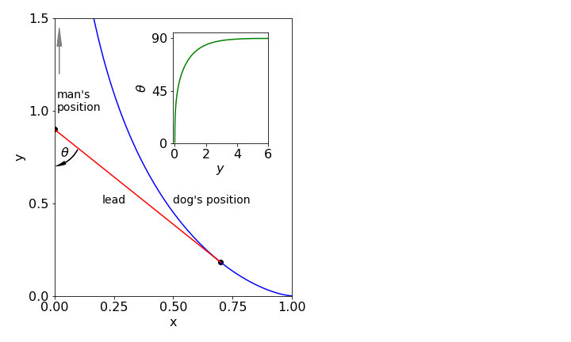

Questions 43 - 73¶
Q43¶
Show that \(\displaystyle F_a=\left( \frac{\partial f}{\partial y}-\frac{d}{dx}\frac{\partial f}{\partial y_x} \right)y_x \)
where \(y_x=dy/dx\) and \(f\) is a function of \(x,\; y\) and \(y_x\), is the same as \(\displaystyle F_b=\frac{d}{dx}\left( f-y_x\frac{\partial f}{\partial y_x} \right)\).
if \(f\) is independent of \(x\), i.e. does not explicitly depend on \(x\)
Strategy: By placing \(y_x\) on the right it can be operated on by \(d/dx\). Expand both expressions and only then let \(f\) not depend explicitly on \(x\). ( \(f = y + dy/dx\) does not explicitly depend on \(x\): \(f = x + y + dy/dx\) does.)
Q44¶
(a) Find \(df /dx\) if \(f = x^2 + y(x)^2 + (dy/dx)^3\) and \(\displaystyle y = e^{x^2}\).
(b) If \(f\) is a function of \(x\), of \(y(x)\) and \(y_x = dy/dx\), written as \(f (x, y, y_x)\), calculate \(df /dx\).
(c) Confirm your result of (b) using (a).
Strategy: (b) Because \(y\) and \(y_x\) depend implicitly on \(x\), these are not constants. The result will contain partial derivatives because when differentiating with \(x,\; y\) and \(y_x\) have to be held constant. Treat \(y\) and \(y_x\) as you would any other function of \(x\) by using the function-of-function or chain rule.
Q45 Shortest distance¶
Show that the shortest distance between two points on a plane is a straight line.
Find the equation if the two points joined are {\(x_0,\; y_0\)} and {\(x_1,\; y_1\)}. A line of shortest distance between two points on a surface is called a geodesic.
Strategy: The equation to use is \(\displaystyle I=\int\sqrt{1+\left(\frac{dy}{dx} \right)^2}dx\). Complete the calculation then work out the constants at the end using the coordinates given.
Q46 Light transmission¶
Light travels through any medium with a speed given by \(c/n\), where \(n\) is the refractive index, and always takes the path of shortest time. Glass can be made with a refractive index that varies with distance. In each case, calculate the path taken by a beam in a two-dimensional medium where,
(a) \(n=1/x\),
(b) \(n=\sqrt{x}\),
(c) \(n=x\).
The integral equation giving the shortest time is \(\displaystyle t = c^{-1} n(x, y)\sqrt{ 1 + y_x^2} dx\), where \(c\) is the speed of light and \(y_x = dy/dx\).
Strategy: Using equation (30) can sometimes be a little tricky. Differentiate with respect to \(y\), which gives zero in this case, then with respect to \(y_x\), but do not differentiate by \(x\), as this will produce 0 for the whole expression. Instead, integrate the second term with \(x\), but do not forget to add the integration constant. Then solve for \(y_x\) and integrate again in \(x\) to obtain the final equation.
Q47 Limits¶
Find the limits
(In questions \(k\) and \(l\) use Stirling’s approximation for large \(n\) which is \(\ln(n!) = n \ln(n) - n\) for very large \(n\)).
Q48 Limits¶
find limits
Q49 Base jumper¶
A base jumper drops from a skyscraper and falls with velocity \(v\), which is limited by the air resistance of the parachute and is proportional to \(v^2\) making their velocity at time \(t\),
The corresponding distance dropped is
where \(g\) is the acceleration due to gravity.
(a) By taking the limit \(t \to \infty\), what does \(v_\infty\) represent?
(b) Find the limits on \(v\) and \(x\) when \(v_\infty \to \infty\), which corresponds to falling in a vacuum.
Strategy: Rewrite the equations in terms of exponentials then take limits. In evaluating the limit \(v_\infty \to \infty\) change \(v_\infty\) to \(u = 1/v_\infty\) to more easily solve this problem.
Q50¶
(a) Show that \(\displaystyle \frac{x^n}{e^x} \to 0\) for all positive values of \(n\) as \(x\to \infty\).
Q51 Cauchy function¶
The Cauchy function, shown in Fig. 15, is \(\displaystyle f = e^{-1/x^2}\) and has the unusual property that any derivative \(d^n/dx^n\) of this function is zero at \(x = 0\). Show that this is true.
Strategy: The reciprocal \(x^2\) makes the calculation difficult when l’Hopital’s rule is used. Instead, substitute \(u = 1/x\) and change the limit.
Figure 15. The Cauchy function
Q52 Max, min inflexion¶
Find the maximum, minimum, and inflexion points of \(y = x^2(x - 1)^3\). Plot the graph to confirm your calculation:
Q53 Cycloid¶
A cycloid, Fig. 16, is the path (locus) drawn out by a point on a tyre as it rolls along a road and can be described with the parametric equations \(x = at - a\sin(t)\) and \(y = a - a\cos(t)\). Find its maximum value.
Incidentally, the inverted cycloid is called the brachistochrone, which is the curve along which an object will fall, in the absence of resistance, in the shortest time between two points, see Section 8.2. Other facts are that the length of the cycloid baseline between adjacent cusps is the circumference of the generating circle. The area of the curve is three times that of the generating circle. This was first demonstrated by Galileo in 1599 by using models and by weighing the shape of the cycloid and circle. The architect Christopher Wren, famous for designing St Paul’s Cathedral in London, showed in 1658 that the length of one arc equals the perimeter of the square enclosing the circle.
Figure 16. A cycloid with its circle of unit radius. Any fixed point on the circle’s circumference draws out a cycloid as the circle rolls along.
Q54 Maxwell-Boltzmann distribution¶
(a) Find the value of \(x\) where \(\displaystyle y = x^2e^{-ax^2}\) has its maximum if \(a\) is a positive constant.
(b) The Maxwell-Boltzmann equation \(P(u)\) describes the distribution in the speed \(u\) of gaseous molecules where
and \(m\) is the mass (in kg) of one molecule, \(k_B\) Boltzmann’s constant and \(T\) temperature (K). Calculate the most probable speed, \(u_p\) from the distribution.
(c) Plot a graph of the speed distribution of SO\(_2\)> molecules at \(100, 300\), and \(500\) K. Indicate up for one temperature. In plotting using python you may find it easier to define \(P\) as a function of \(T\) and \(u\) by P = lambda u, T :\(\cdots\) etc. (\(k_B = 1.38 \cdot 10^{-23}\,\mathrm{ J\,K^{-1}}\); don’t forget to put \(m\) in kg.)
(d) Comment on the shape of the distributions.
Strategy: Note the similarity in form between the two equations in (a) and (b). Using the equation of the form given in (a) rather than (b) makes the calculation far easier and a substitution can be made as the last step.
Q55 Lennard-Jones potential¶
(a) Find the minimum value of \(\displaystyle y = a/x^2 - b/x^4\).
(b) The Lennard-Jones potential, which describes the attraction between two atoms, has the form
where \(\sigma\) is approximately the size of the atom, \(\epsilon\) the interaction energy, and \(r\) the separation of the atoms.
(c) Find the separation of the atoms at which the energy is at a minimum.
(d) Plot the potential using the parameters for neon, which are \(\sigma = 2.74 \cdot 10^{-10}\) m and \(\epsilon = 3.1\cdot 10^{-3}\) eV. (Choose the scale carefully in eV so that the minimum is clear on your plot.)
(e) Work out the numerical value of the minimum separation of neon atoms and compare it with the experimental value of \(3.13 \cdot 10^{-10}\) m. Find the minimum energy.
Q56 Maximum area of triangle¶
Using fig. 17, find the maximum area of the right-angled triangle OPN when the point P is any point on the curve
Figure 17, left and 18 right. Left. The triangle to maximise is OPN. Right. The pear shaped quartic \(a=2, b=4\).
Q57 Optimum speed¶
Suppose that the power \(p\) an aeroplane has to produce to fly at a speed \(v\) is given by \(\displaystyle p=\frac{aw^2}{v} +bv^3\) where its weight is \(w\) and \(a\) and \(b\) are positive constants depending on the shape and size of the aeroplane. What is the optimum speed when the power is least?
Q58¶
In figure 18 the pear-shaped quartic has the form \((by)^2 = x^3(a - x)\), \(a\) and \(b\) being constants. Where is the tangent horizontal?
Strategy: A horizontal tangent is the same as zero gradient.
Q59¶
If the inverse of the sine function is \(u=\sin^{-1}(p)\)
(a) find \(\displaystyle \frac{du}{dp}\) and \(\displaystyle \frac{d^2u}{dp^2}\)
(b) Generalise your results to any inverse function \(u=f^{-1}(p)\) and show that
Strategy: Note that \(\sin^{-1}(p)\) is not the same as \(1/\sin(p)\). Use the fact that \(\sin(u) = p\) and using a right - angled triangle find \(\tan(u)\).
Q60 Football throw-ins¶
At school you will have learned that to throw a ball the furthest distance, with a fixed amount of effort, it should be launched upwards at \(45^\text{o}\). Observing football (soccer) and rugby players throwing balls, they rarely appear to do so at \(45^\text{o}\) but at a smaller angle. A careful examination of the motion (Linthorne 2006) shows that the equation governing the horizontal distance \(R\) travelled is
where \(h\) is the height above ground level that the ball is launched at and with a speed of \(v\,\mathrm{ m \,s^{-1};}\, g\) is the acceleration due to gravity.
Calculate the maximum distance thrown at a given angle and velocity and calculate how the launching angle varies with initial speed. Plot the surface showing the distance \(R\) vs angle and initial speed and superimpose the maximum distance vs angle assuming that the ball is launched from head height of about \(2\) m and with initial speeds of \(0 \to 15\,\mathrm{ m\,s^{-1}}\).
Strategy: Differentiating this equation with respect to \(\theta\) gives a very complex equation, which may defeat you. It is easier to differentiate with respect to \(\sin(\theta)\) and call this \(x\). The conversion you will also need is \(\sin(2\theta) = 2\sin(\theta)\cos(\theta)\) and the cosine is calculated using \(\cos^2(\theta) + \sin^2(\theta) = 1\).
Q61 Tractrix¶
The shape of the tractrix or hound-curve is shown in Fig. 19. The name arises from the behaviour of a dog that stubbornly resists walking but is nevertheless, pulled along by its lead which has a fixed length. Other examples are the sideways path a toy follows when pulled by a child, or a boat pulled from its distant mooring by walking along the side of the quay. Huygens originally studied this problem in 1692, and Leibniz later solved it after a friend described the path taken by a heavy fob watch that was placed on a table and moved by pulling the end of its chain along the table’s side.
The straight-line movement you make is along the y-axis, the length of the tangent from a point on the line to the y-axis is always a constant because the dog’s lead, or watch-chain, has a fixed length. The curve Fig. 19 shows the position of the dog as you move along the y-axis.

Fig. 19 The tractrix is shown in blue and is the path followed by dragging. The length of the lead is fixed at \(a\) = 1 as the dog is pulled. You start at \(y = 0\), the dog at \((1, 0)\). The inset shows the angle \(\theta^\text{o}\) which you look back at the dog (in degrees) vs. the distance walked along the y-axis.
The equation of the curve is \(\displaystyle y=a\ln\left(\frac{a+\sqrt(a^2-x^2}{x} \right)-\sqrt{a^2-x^2}\) where \(a\) is a constant such that \(a\lt x \) and the man walks up the y-axis.
(a) Find the angle \(\theta\) the end of the lead makes at any point on the curve.
(b) Find the radius of curvature of the line: equation (24) question 39.
(c) Calculate the length of the path the dog takes if the arc length \(s\) of a curve between points \(x_\alpha\) and \(x_\beta\) on the x-axis is
(d) If the dog has an effective weight of \(25\) kg (including friction), how much work does the man have to do to move the dog \(10\) metres assuming that he starts to pull the dog from the x-axis. The dog’s lead is \(1\) metre long.
Q62 Optimum strength of bones¶
The bones of animals and birds have to be strong enough to withstand the forces applied to them as the animals run, jump, or fly but not so strong that the extra weight and energy needed to build and maintain them imposes a disproportionate burden; see Alexander (1996) for a full discussion. The strength of a cylinder, which will suffice to describe the shape of a bone, clearly depends upon the material with which it is made as well as its size.
A bone has a hard outer region of hydrated calcium phosphate (as calcium apatite), and this is intimately associated with collagen, a protein which gives the bone some elasticity. Bone also has a soft inner core consisting of marrow and this is where new white blood cells are made. Fig. 20 sketches the general structure.
The strength of a material is characterized by an elastic modulus \(Y\) that scales how the material responds to an applied force (or strain) as,
and by a moment of the force \(M\). This moment is the energy or work needed to bend an object; it is the applied force multiplied by the distance from the point of bending to the point of applying that force.
Imagine the effort required trying to bend a length of straight copper pipe by placing in on your knee and pulling on the ends. The further from your knee you can grab hold of the pipe, the easier it is to bend because you can apply more energy or torque. This is called a moment, and is defined as
It is intuitive that a long, thin bone will bend and break more easily than a shorter but otherwise similar one.
If a hollow cylinder, see Fig. 20, of outer radius \(r\) with the central hole having a radius \(kr\) is subject to a moment of force, then, by using standard engineering equations, the radius of the bone is related to the strength \(Y\) and the moment \(M\) as \(\displaystyle r^3=\frac{M}{Y(1-k^4)}\), where \(0\lt k \lt 1\) and is a constant depending on the bone.
When \(k\) is large \(\approx 1\), the bone has a thin wall and when \(k \approx\) 0 the bone is almost solid, therefore it would be interesting to know how to optimize the mass of the bone for a given strength. Bones that are too strong and heavy for any danger that the animal may experience may not offer any evolutionary advantage, but require more effort to move, and more food to grow and maintain. Conversely, weak bones that break under moderate exertion will prove to be deadly, as once crippled an animal is usually easy prey.
(a) If the density of the bone is \(\rho\) and \(m\) the mass per unit length, find the optimum amount of marrow in the bone, i.e. the optimum value of \(k\) if the marrow has half the density of bone.
(b) Plot separately the mass of the bone and marrow vs \(k\) (assuming \(M\), \(Y\) and \(\rho\) each equal 1) and also plot their sum to show that the minimum mass is at about \(k\) = 0.62 and independent of \(M\) and \(Y\). Speculate as to why \(k\) appears to be approximately the same in mammal bones. Experimental values for the femur are 0.63 in foxes, 0.56 in lions, and 0.62 camels.
Strategy: Work out the mass \(m\) of the bone and minimize this by finding \(dm/dk\). The minimum in the curve of \(m\) vs \(k\) should be at the optimum value. Use Sympy to solve the polynomial equation formed. Inspect the answers to determine what the physically realistic value is.
Figure 20. Bone cross-section. The harder material is shown as the darker colour.
Q63 Rotational spectrum¶
The intensity of the rotational spectrum of a heteronuclear rigid rotor diatomic molecule, is given approximately by \(\displaystyle I = (2J + 1)e^{-E_J /k_BT}\), where the rotational energy increases with quantum number \(J\) as \(E_J = BJ(J + 1)\). The rotational constant is \(B\), conventionally this has units of cm\(^{-1}\), and \(k_B\) is Boltzmann’s constant and \(T\) the temperature.
(a) At what quantum number is the maximum line intensity expected?
(b) What is this value for the vibrational ground state of HCl, CO, and iodine at \(100, 300\), and \(500\) K if the rotational constants are \(10.59, 1.93\), and \(0.3736\,\mathrm{ cm^{-1}}\) respectively?
Strategy: Differentiate the equation for the intensity with respect to \(J\), which it is assumed is a continuous variable, not a set of integers, then set the result to zero and solve for \(J\). The maximum will be called \(J_{max}\).
Q64 NMR line-width¶
A line in a nuclear magnetic (NMR) experiment on an isolated nucleus, or the spectral lines observed in the absorption or emission of isolated atoms and molecules, are not infinitesimally narrow but have an inherent width, even when Doppler, collisional, and other broadening effects are absent. The width \(Delta \nu\) and lifetime \(\tau\) of the transition are related by \(\Delta \nu\Delta\tau \approx 1\). Because one or both states involved must have a finite lifetime and decay with an exponential probability distribution, i.e. as \(\displaystyle e^{-t/\tau}\), the transition intensity has the Lorentzian line shape;
where \(\tau\) is the lifetime of the excited state involved, \(\omega_0\) the transition frequency, and \(\omega\) the radiation’s angular frequency; \(\omega = 2\pi\nu\) in radians s\(^{-1}\). This line shape is similar to that of the Gaussian or bell shaped curve but is slightly wider in the wings.
(a) Show that the maximum intensity is at the transition frequency, \(\omega_0\), and calculate its full width at half-maximum, FWHM.
(b) In EPR spectroscopy the derivative of the line shape is plotted rather than the line shape itself; show that the difference between the maximum and minimum of this derivative lineshape is \(2/(\tau \sqrt{3})\).
(c) Plot the lineshape function and its derivative to confirm your calculation. Use values typical for an EPR experiment with a transition at \(50\) MHz. You should choose a suitable value of \(\tau\).
Q65 Blackbody energy¶
By concluding that radiant energy must be quantized, Planck derived a formula for the radiant energy density \(\rho\) of a black body at a wavelength \(\lambda\) and temperature \(T\), which is
(a) Show, provided that \(hc/\lambda k_BT \gg 1\),that \(\lambda_{max}T\) = constant describes the maximum energy density. Wein discovered empirically that \(\lambda_{max}T \)= constant, which is now called the Wein displacement law.
(b) Estimate the constant and limits to \(\lambda\) and \(T\) that makes this approximation valid.
Q66 probability of finding atom¶
The probability of finding the nuclei at a given internuclear separation \(x\) in a diatomic molecule is given by \(\psi^*(x)\psi (x)\), where \(\psi(x)\) is the wavefunction and the * indicates that if \(\psi\) has a complex part the complex conjugate should be used. The \(v = 1\) vibrational level of a harmonic oscillator has the wavefunction
At what internuclear separation is the maximum and at what the minimum probability?
Q67 Extending a protein by atomic force microscopy¶
If a protein or a length of DNA is attached to one end of the cantilever of an atomic force microscope, AFM, the other end being fixed to the microscope’s base and then the cantilever retracted, the force produced on the cantilever during extension is described by the worm-like-chain (wlc) model of extension. The protein acts like a spring but one whose force vs extension varies in a complicated way. At low extension, Hooke’s law is obeyed, but at larger extension, this is not the case. Experimentally it is found that, to a good approximation, the force f is related to the extension x as predicted by the wlc model,
where \(L_p\) is the length of the protein (\(\approx 30\) nm) and \(p\) is the persistence length (\(\approx 0.4\) nm), which is a measure of how easily the protein can bend. The measured force is small as would be expected for a single molecule and is measured in piconewton; \(1\, \mathrm{pN} \equiv 10^{-12}\) N.
The true response of the cantilever also depends upon how easily the cantilever itself bends Fig. 21. The compliance \( h\),which is the reciprocal of the total force constant, thus describes both the protein and cantilever behaviour and is
where the cantilever has a force constant \(k_s\), and \(h\) has units of m/N.
Figure 21. In the AFM, the cantilever is moved upwards relative to the base. The protein partially resists extension, behaving like a stiff spring and bends the cantilever.
(a) Calculate the compliance \(h\) in terms of extension \(x\).
(b) Starting with the equation for \(h\), and without substituting for \(dx/df\), show that
Strategy: (a) The compliance requires \(dx/df\), but \(f\) is a function of \(x\). Therefore the expression to use is that between reciprocal derivatives,\(\displaystyle \frac{dx}{df}=1/\frac{df}{dx}\).
(b) The derivative \(dh/df\) is sought and instead of substituting for f, because this produces a very complicated expression, simply differentiate \(h= 1/k_s +dx/df\) with respect to \(f\) with \(k_s\) as a constant.
Q68 Morse potential¶
The potential energy \(V\) of a diatomic molecule is often more accurately described by a Morse potential than the harmonic oscillator, in which case \(\displaystyle V = D_e\left(1 - e^{-\beta(r-r_e)}\right)^2\), where \(\beta\) is a constant that depends upon the force constant and mass of the molecule and \(r_e\) is the equilibrium bond length.
(a) What does \(D_e\) represent? What are the units of \(\beta\) ?
(b) Evaluate \(dV/dr\) and find its minimum using \(d^2V/dr^2\).
(c) Show that the bond extension at the maximum attractive force experienced by the molecule is \(r_{max_f} = r_e + \ln(2)/\beta\).
(d) If the H and Cl atoms approach one another with only a small amount of kinetic energy, i.e. essentially zero, what is the closest distance they can approach one another?
(e) Calculate all these quantities for H\(^{35}\)Cl, using the values \(ν_e = 2989.7\,\mathrm{ cm^{-1}},\, x_e = 0.0174098\) and \(r =0.1274\) nm and the constants are \(\displaystyle \beta =2\pi c\nu\sqrt{\frac{ \mu}{2D_e} }\) and \(\displaystyle D_e =\frac{hc\nu_e}{4x_e}\) ,where \(\mu\) is the reduced mass and \(c\) the speed of light.
Strategy: (b) Force is the derivative of potential energy, calculate this and then simplify to find the minimum energy and force. If you are not familiar with the shape of the Morse potential, you can either look up the anharmonic oscillator in a textbook, or start the question by plotting using the values given in the question.
Q69 Morse potential energy levels¶
The energy levels in the Morse potential are given by \(\displaystyle E_n = \nu_e(n + 1/2) - x_e\nu_e(n + 1/2)^2\), where \(\nu_e\) is the frequency in cm\(^{-1}\), \(n\) the vibrational quantum number and \(x_e\) the (dimensionless) anharmonicity. Use data given in the previous question and assume that \(n\) is a continuous variable in any differentiations.
(a) Show that there are a finite number of energy levels in the Morse potential. What is \(n_{max}\) for HCl?
(b) Show that the energy with this quantum number is less than \(D_e\).
(c) Calculate the dissociation energy by adding up all the differences in energy levels with integer values of \(n\). Use SymPy to do this, and then compare the two results you obtain for the maximum quantum number.
(d) Plot a graph of the differences vs quantum number.
Strategy: By assuming that \(n\) is continuous allows us to differentiate the energy, and when the energy difference between levels is zero it is assumed that this occurs just at the dissociation limit. Possibly this will not lead to a very good answer because the dissociation energy must be the sum of all of the energy level differences from \(n\) = 0 to the dissociation limit.
Q70 \(\mathrm{N_2O_4}\) thermal decomposition¶
Gaseous \(\mathrm{N_2O_4}\) thermally decomposes into two NO\(_2\) molecules. The reaction is
Starting with \(1\) mole of \(\mathrm{N_2O_4}\) the number of moles reacted is \(1 - \xi\) and the number of moles of NO\(_2\) produced will be \(2\xi\) where \(\xi\) (pronounced xi) is the extent of reaction and has units of moles. The extent of reaction \(\xi\) is the number of moles reacted multiplied by the stoicheiometry constant.
The total number of moles is \(1-\xi+2\xi=1+\xi\) and the mole fractions are
If the total pressure is held constant at \(1\) bar, then \(p_{N_2O_4}=x_{N_2O_4} p_0\) and \(p_{NO_2} =x_{NO_2} p_0\).
The total Gibbs energy is
(a) Calculate the equilibrium extent of reaction \(\xi_{eq}\) when \(dG/d\xi = 0\).
(b) As \(\Delta G^\mathrm{O}_{N_2O_4} = 97.79\, \mathrm{kJ\, mole^{-1}}\) and \(\Delta G^\mathrm{O}_{NO_2} = 51.26\,\mathrm{ kJ\, mole^{-1} }\)calculate \(\xi_{eq}\) at 320 K.
(c) Confirm your answer by plotting \(G(\xi)\) vs \(\xi\) at 320 K.
Q71 Electron transfer kinetics¶
In the protein containing the reaction centre of photosynthetic bacteria, an electron is released from the reaction centre after it receives energy from an antenna bacteriochlorophyll molecule. The path along which the electron moves after leaving the bacteriochlorophyll dimer of the reaction centre is,
where (BChl)\(_2\) is a dimer of bacteriochlorophyll molecules. BPh is a bacteriopheophytin that lacks the Mg atom at the centre of the chlorophyll and which is replaced by two H atoms. (The actual scheme is slightly more complex than presented here but the essential features are retained.)
In a pump-probe laser experiment using femtosecond - duration light-pulses the BPh has to be detected. If \(C\) is the concentration of the (BChl)\(_2\), and \(k_c\) the decay rate constant then
where \(P\) is the concentration of the pheophytin. At time \(t\), given that the initial amount of \(C = C_0\), then
and
(a) At what time would it be best to observe \(P(t)\)?
(B) if the spectra of BChl and (BChl)2 were significantly overlapped with one another what would then be the best time to observe BChl?
Q72 Ammonia inversion¶
Ammonia has a triangular pyramidal structure with the N atom at the apex. One of its vibrational normal modes is inversion of the positions of the atoms to their mirror image. It is a moot point as to whether you consider the N atom or the H atoms as moving during the vibration. However it is viewed, the vibrational potential has two wells separated by a barrier. Experiment shows that the nitrogen atom moves by approximately \(\pm 0.038\) nm either side of the plane formed by the three H atoms.
(a) If the potential \(V\) is given, approximately, by the formula \(\displaystyle V = 155(\theta^4 - 7.2\theta^2) + 2010\,\mathrm{ cm^{-1}}\) where \(\theta\) is the bend angle from the planar structure, where are the potential minima and how high is the barrier?
(b) How many inversions/second does the NH3 molecule undergo in its lowest vibrational level?
The two inversion forms, if considered isolated from one another, have the same energy because they are mirror images of one another. If they are now allowed to interact they will influence one another’s energy causing one to increase, and the other to fall, which produces level splitting seen in figure 22. The sum of the energy levels remains the same but the population in the lower level will be greater by the Boltzmann distribution causing an overall reduction in energy. The energy levels below the barrier influence one another only slightly, leading to a small splitting of levels. Above the barrier, the interaction is larger, therefore the splitting is larger, and the levels appear as single lines. See Chapter 11.10 for a method with which to calculate the energy levels and wavefunctions.

Figure 3.22 A sketch, and not to scale, of the potential energy of the ammonia inversion potential and some vibrational energy levels. Notice that the levels below the barrier are doubled.
Q73 Magnetisation¶
A ferromagnet is a material that has a spontaneous magnetization in the absence of an external magnetic field and all the magnetic moments are aligned in one direction; e.g. \(\cdots \uparrow \uparrow\uparrow \uparrow\cdots\). In an anti-ferromagnet neighbouring magnetic moments are paired as \(\cdots \uparrow \downarrow\uparrow\downarrow \cdots\). The compounds of rare earths form crystals containing parallel layers in each of which spins are aligned as in a ferromagnet which can all point in a different direction to that of adjacent layers. However, the spins are coupled between layers with an exchange constant \(J_1\) to neighbouring layers and \(J_2\) to next neighbours. The energy of any plane containing N spins, each having spin quantum number S, can be written as (Blundell 2001)
Find three possible minimum energies if \(\theta\) is the angle between the overall magnetic moment between planes.